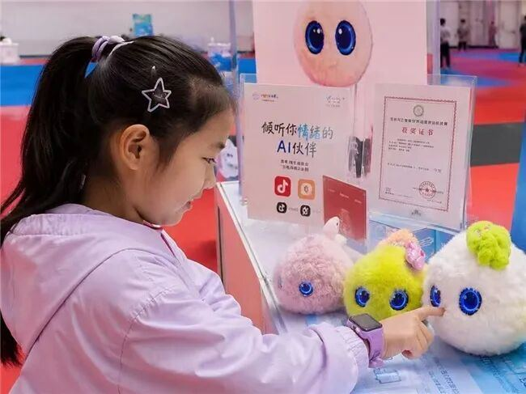
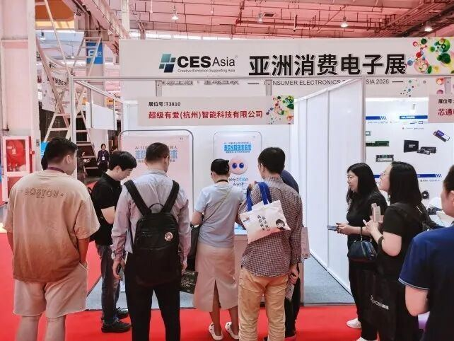

当前，⼈⼯智能正加速融⼊经济社会发展的各个领域。在教育、医疗、养⽼等⺠⽣场景中，AI技术不断拓展服务边界，为提升服务质量和普惠⽔平提供新的可能。与此同时，⼉童⻘少年⼼理健康问题⽇益受到社会关注。随着家庭结构和⽣活⽅式的变化，⼉童在情绪管理、沟通表达、⾃信建⽴、抗挫能⼒培养等⽅⾯的成⻓需求持续增加。如何利⽤科技创新⼿段为⼉童提供更加持续、便捷、普惠的成⻓⽀持，正成为⼈⼯智能应⽤探索的重要⽅向之⼀。
在此背景下，超级球球尝试将⼈⼯智能技术与⼉童成⻓需求深度结合，围绕⼉童情绪发展、⼈格养成和⼼理⽀持需求，构建⾯向家庭场景的⼉童情绪智能能⼒体系，为⼉童成⻓陪伴提供新的技术路径。
聚焦⼉童成⻓场景 构建情绪智能能⼒体系与传统⼉童玩具、学习机以及通⽤AI聊天产品不同，超级球球并不以知识问答或娱乐互动为核⼼定位，⽽是聚焦⼉童成⻓过程中的情绪发展与⼈格培养需求。产品致⼒于帮助⼉童提升表达能⼒、情绪管理能⼒、⾃信⼼、抗挫⼒和积极成⻓⼼态，定位不是替代⽗⺟、⽼师或专业⼼理⼯作者，⽽是通过⼈⼯智能技术为家庭提供⼀种⾼频、⻓期、可持续的成⻓陪伴⽀持，成为孩⼦愿意交流、愿意表达、愿意信任的成⻓伙伴。

⾃研⼉童成⻓AI系统 打造垂直领域核⼼能⼒超级球球由清华⼤学⼈⼯智能专家联合北师⼤⼉童⼼理学领域五博⼠团队研发，基于⼤量真实⼉童成⻓场景进⾏专项训练，形成⾯向⼉童成⻓领域的垂直AI能⼒体系。
产品的核⼼能⼒建⽴在对⼉童情绪的持续感知之上。通过语⾳内容、表达⽅式及多维交互信号，超级球球能够识别⼉童的情绪状态与变化趋势，进⽽以符合⼉童⼼理发展特点的⽅式引导孩⼦表达感受、梳理情绪、建⽴积极认知。在此基础上，系统持续记录并理解⽤⼾成⻓过程中的兴趣偏好、重要经历及情绪变化，围绕专注⼒、表达⼒、情绪⼒、韧性⼒等维度提供⻓期个性化陪伴与正向反馈，真正实现从单次互动到持续成⻓的跨越。
在安全保障⽅⾯，产品针对异常情绪波动和持续负⾯表达建⽴了⻛险预警机制，为家庭提供参考性提醒；同时构建符合未成年⼈使⽤场景的内容安全规范与成⻓保护机制，确保互动内容健康、积极、适龄。
国内外市场反响热烈展会现场，超级球球吸引了众多家庭⽤⼾、教育机构、渠道合作伙伴及投资机构代表体验交流。不少家⻓表⽰，相较于传统智能硬件产品，⼉童情绪成⻓、⼈格培养和⼼理健康⽀持等议题具有更⻓期的社会价值和家庭价值。来⾃新加坡、韩国、⽇本、德国、英国及中东地区的渠道商和采购商，也围绕产品国际化发展、本地化运营以及市场合作等⽅向展开交流。
超级有爱智能科技有限公司创始⼈兼CEO元晓帅博⼠表⽰：“⼈⼯智能的发展不仅体现在效率提升，更体现在服务⼈的全⾯发展。⼉童成⻓不仅需要知识⽀持，更需要情绪⽀持和⼼理⽀持。我们希望通过⼈⼯智能技术，让更多家庭获得更加普惠、便捷和可持续的成⻓陪伴服务，让科技真正服务于⼉童的健康成⻓。”她表⽰，未来公司将继续深耕⼉童成⻓领域，推动⼈⼯智能、⼼理健康与成⻓教育的深度融合，不断提升产品能⼒和服务⽔平，为⼉童健康成⻓提供更多创新解决⽅案。
业内⼈⼠认为，随着⼈⼯智能技术不断成熟，以及社会对⼉童⼼理健康和成⻓质量关注度的提升，围绕⼉童情绪成⻓、成⻓陪伴和⼼理健康服务的创新实践将持续涌现。超级球球的推出，为⼈⼯智能赋能⼉童成⻓提供了新的实践样本，也展现出科技向善在家庭场景中的应⽤潜⼒。
关于超级球球超级球球是超级有爱智能科技有限公司⾃主研发的AI⼉童成⻓陪伴机器⼈，专为3⾄12岁⼉童打造。产品融合⼈⼯智能、⼉童⼼理学与成⻓教育理念，具备情绪识别、共情交互、⻓期记忆、成⻓引导等核⼼能⼒，致⼒于培养⼉童专注⼒、表达⼒、情绪⼒与韧性⼒，帮助孩⼦建⽴受益⼀⽣的良好性格与健康⼼态。

品牌使命：⽤AI让⼼理健康融⼊⽇常⽣活品牌愿景：让每个⽣命的情绪陪伴触⼿可及⽂章转载⾃搜狐⽹⽹址https://biznews.sohu.com/a/1034803960_120932824阅读原⽂